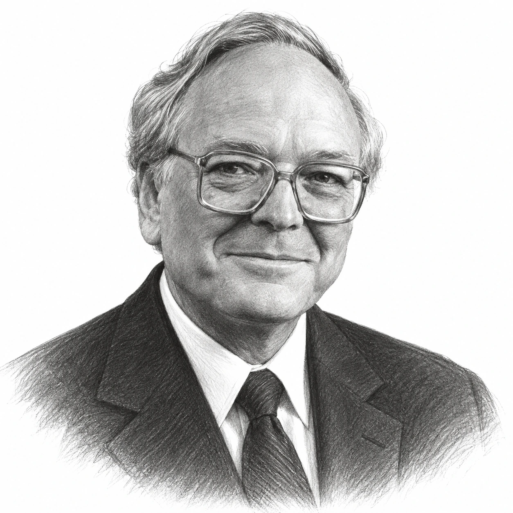
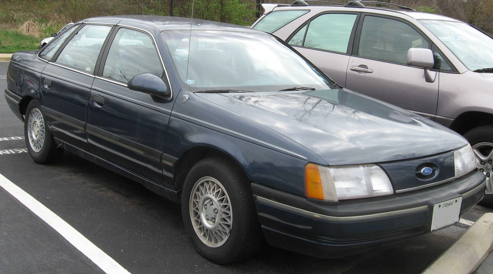

John Neff was born in Wauseon, a small town in north-west Ohio, on 19 September 1931, and his early years were unsettled ones. His parents separated when he was very young, and after his mother remarried the family moved to Texas, where his stepfather worked in the oil fields and money was often short, so that John Neff went to high school in Corpus Christi, where by his own later account he was neither a popular nor a well-graded pupil.
After high school he returned to Ohio to live with his father and worked for a while in his father's industrial-equipment supply business, where he was taught to pay close attention to the price of everything he purchased. He then spent two years in the US Navy as an aviation electronics technician during the Korean War, and only after leaving the Navy did he go to university, graduating summa cum laude in industrial marketing from the University of Toledo in 1955. Two things happened at Toledo that shaped the rest of his life, because he met Lillian Tulak, whom he married in 1955, and he was taught finance by Professor Sidney Robbins, who had worked alongside Benjamin Graham and introduced John Neff to the idea of valuing a business rather than following its share price.

On graduating, John Neff hitch-hiked to New York in search of a job on Wall Street and found that nobody there was much interested in him, so that when he was offered a post as a securities analyst he turned it down and took the same job at National City Bank of Cleveland instead. He stayed at the bank for eight years, from 1955 to 1963, completing an evening MBA in banking and finance at Western Reserve University in 1958, and those years of analysing companies for a conservative Midwestern bank were the apprenticeship for everything that came afterwards.
In 1963 John Neff moved to Philadelphia to join Wellington Management Company, which then ran the Wellington Fund, a large balanced fund, and a smaller and struggling equity fund called Windsor, launched in 1958. In June 1964, a year after he arrived, he was given charge of Windsor, which had around $75m of assets and a poor record, and he kept that job until 31 December 1995, although the arrangements around him changed in the mid-1970s, when Wellington's funds were reorganised under a new company, the Vanguard Group, run by John Bogle, with Wellington Management staying on as investment adviser, so that Windsor became a Vanguard fund managed by a Wellington partner. John Bogle, who otherwise argued that very few managers could beat the market, made an exception for his friend and tennis partner, and later said that "it would be impossible to overestimate John's importance to Vanguard's survival in the early years."
The method John Neff used at Windsor was not complicated to describe, although it was hard to live with. He purchased shares that were cheap in relation to their earnings, generally at price-earnings ratios of between 40% and 60% of the market's, in companies that were nonetheless growing their earnings at 7% or more a year and paying a dividend that was secure and preferably rising. Others called him a contrarian or a value investor, whereas he disliked both labels and wrote in his book that "personally, I prefer the label: Low P/E Investor." The low multiple was the starting point rather than the conclusion, because he went on to probe the balance sheet, the return on equity and the management before anything was purchased.
The measure he leant on most was one he called total return divided by the P/E, meaning the expected earnings growth rate plus the dividend yield, divided by the price-earnings multiple paid. A company growing at 10% and yielding 5% has a total return of 15%, and at 7.5 times earnings the ratio was 2.0, whereas the same company at 15 times earnings scored 1.0 and was much less attractive. He wanted Windsor's holdings to beat the market's figure by two to one, and the dividend did much of the work, because a 4% or 5% yield meant that a holder was paid to wait for the market to change its mind, which often took three years or more.
However, a method that purchases what is unpopular will look wrong whenever popularity is being rewarded, and the early 1970s were such a period. Investors crowded into the "Nifty Fifty", a group of large growth companies whose shares were held to be worth any price, and Windsor, which owned almost none of them, gained 7.5% in 1971 and 10.2% in 1972 while the S&P 500 returned 14.6% and 18.9%. "I watched in amazement as investors clamored for Nifty Fifty stocks at the expense of dozens, if not hundreds" of cheaper companies, Mr Neff wrote. The worse blow came in 1973, when the market fell by 14.7% and Windsor fell by 25%, because the cheap shares it owned were sold off harder than the index even as the Nifty Fifty began to collapse, and three years of lagging the market, ending with the loss of a quarter of the fund's value, would have ended many managers' careers.
The recovery that followed showed why Wellington was right to keep him, since Windsor beat the S&P 500 in each of the next five years, by 9.6, 18.3, 22.8, 8.4 and 2.4 percentage points, by which time the shares abandoned in 1973 had been repriced. John Neff wrote to shareholders that Windsor viewed "the current devastation in the marketplace, not as a reason for alarm, but rather as one of opportunity", and he behaved the same way after the crash of October 1987, when the fund had 20% in cash going into the fall and was almost fully invested a fortnight later.
By the mid-1980s the record had attracted so much money that Windsor could no longer invest it with the care he wanted, and in mid-1985 the fund was closed to new investors, then a rare step for an American fund. Vanguard launched Windsor II in June 1985 under different managers, and Windsor's own assets, which had been below $1bn as recently as 1981, passed $4bn by the end of 1985, at which point several accounts describe it as the largest equity fund in the United States. However, asset growth is not the same thing as performance, and the later record was made with large positions in large companies, because a fund of that size had little choice.

The purchase that best illustrates the method was Ford. In 1984 the American car industry was emerging from the deep recession of the early 1980s, and investors, fearing that the recovery in sales would not last, sold Ford down to around $12 a share, which was two and a half times its earnings. John Neff looked at a company with very little debt, around $9bn of cash and a management that had cut its costs hard, and within a year Windsor had accumulated 12.3m shares at an average price of under $14, so that when the shares reached $50 roughly three years later Windsor's profit, by his own account, was almost $500m. This was a judgement that the market had priced Ford as if the next downturn were already here, and the same thinking took him into oil shares after the oil price collapsed in 1986.
The other example he liked to cite was Citicorp, which he purchased in 1991 when the bank was weighed down by commercial property loans, of which nearly 43% were non-performing, and by lending to developing countries, so that some of its debt had been downgraded to junk and its shares had fallen to around $8. The purchase drew what Mr Neff called "slings and arrows", and for a while it looked like a mistake, because the shares went on falling after Windsor had purchased them. However, he held on, arguing that the bank's American credit card business and its overseas branches were worth far more than the market allowed, and by the end of 1996 Citicorp shares stood at $104 and the holding was Windsor's largest, worth $728m. "To us, ugly stocks were often beautiful. If Windsor's portfolio looked good, we weren't doing our job," he wrote.
He did not get everything right, and he was candid that a low multiple could be a trap when the earnings beneath it were about to disappear, warning that "stubborn contrarians will ultimately face tragic outcomes." His rule for selling was as strict as his rule for buying, because each holding had a target price set when it was purchased, and once the market had come round the shares were sold whether or not he still liked the company. "When you feel like bragging, it's probably time to sell," he told the Philadelphia Inquirer in 1995. Windsor was also a concentrated fund for its size, with its ten largest holdings making up around 40% of assets.
Alongside Windsor he ran Gemini and later Gemini II, a closed-end fund listed on the New York Stock Exchange that gave investors a way into the Windsor portfolio after the open-ended fund had closed, and which was wound up in January 1997 with its holders able to take Windsor shares in exchange. From 1980 he also chaired the Investment Board of the University of Pennsylvania, a university he had never attended, after its president and the chairman of its trustees asked him to help with what was then one of the worst-performing endowments in the country, and in the 18 years he held the post the endowment grew from around $200m to around $3bn, for which he was paid, as Penn put it, "no more than a University parking permit".
John Neff retired as Windsor's manager on 31 December 1995, handing over to Charles Freeman, who had joined Wellington in 1969 straight from Wharton as his assistant and had worked beside him for 26 years, by which time the fund had around $13bn of assets and some 400,000 shareholders. He stayed on as a senior consultant to Wellington, sat on the Barron's Roundtable, as he had since 1976, until 2007, and in 1999 published "John Neff on Investing", written with S. L. Mintz. "Windsor was never fancy, fad-driven, or resigned to market performance," he wrote. "We followed one durable investment style whether the market was up, down, or indifferent."

He and Lillian gave generously to the University of Toledo, funding a trading room, an endowed chair in finance and a student-managed portfolio, and their gifts of $18.7m led the university to name its College of Business and Innovation after them in December 2020. Lillian Neff died in 2017, after 63 years of marriage, and John Neff, who had developed Alzheimer's disease and moved from his home in Berwyn, Pennsylvania, to a retirement community nearby, died on 4 June 2019 at the age of 87. The record he left belongs to a fund and to a period, because it does not extend to Windsor's performance under the managers who followed him, and a compound rate of 13.7% over 31 years is not a forecast of what a low P/E investor might earn today, although it does show that an unglamorous method, applied by one person for three decades, produced a result that few of his contemporaries matched.
The record
| Measure | Windsor Fund | S&P 500 | Average value fund |
|---|---|---|---|
| Average annual total return, 30 June 1964 to 31 October 1995 | 13.7% | 10.6% | 10.2% |
| Cumulative total return, same period | 5,546.4% | 2,229.7% | n/a |
| Value of $10,000 invested 30 June 1964, at 31 October 1995 | $564,637 | $232,974 | $212,377 |
| Compound annual return, 30 June 1964 to 31 December 1995 (Forbes) | 13.8% | n/a | n/a |
| Years ahead of the S&P 500 in 31 calendar years | 22 (Neff's count) or 23 (Wellington's count) | ||
| 1971 | +7.5% | +14.6% | |
| 1972 | +10.2% | +18.9% | |
| 1973 | −25.0% | −14.7% | |
| 1974 to 1978, Windsor less S&P 500 | +9.6, +18.3, +22.8, +8.4, +2.4 points |
The headline figures are those reported by Vanguard in the Windsor Fund's annual report for the year to 31 October 1995, published a few weeks before John Neff retired, and they are total returns in US dollars with income and capital gains distributions reinvested, after the fund's operating expenses but before any sales charge that early investors paid in Windsor's load-fund years. The S&P 500 figure includes reinvested dividends but carries no costs. The 13.8% figure is Forbes's calculation to Mr Neff's actual retirement date two months later. The annual figures for 1971 to 1978 are as quoted from his book by Validea and have not been checked against Vanguard's own year-by-year data. The record is the fund's, not that of any one investor, and it ends with his retirement; Windsor's returns since 1996 belong to his successors.
Life in dates
- 1931Born in Wauseon, Ohio, on 19 September.
- Early 1930sHis parents separate; his mother remarries and the family moves to Texas, where he attends high school in Corpus Christi.
- Early 1950sReturns to Ohio to live with his father and serves two years in the US Navy as an aviation electronics technician.
- 1955Graduates summa cum laude from the University of Toledo, where he was taught by Sidney Robbins, marries Lillian Tulak and joins National City Bank of Cleveland as a securities analyst.
- 1958Completes an MBA in banking and finance at Western Reserve University while working at the bank.
- 1963Joins Wellington Management Company in Philadelphia.
- 1964Becomes portfolio manager of the Windsor Fund in June, with around $75m of assets.
- 1971–73Windsor lags the S&P 500 for two years during the Nifty Fifty boom and then falls 25% in 1973.
- 1974–75The Vanguard Group is formed; Windsor becomes a Vanguard fund advised by Wellington Management.
- 1974–78Windsor beats the S&P 500 in five successive years.
- 1976Joins the Barron's Roundtable, on which he sits until 2007.
- 1980Becomes a trustee of the University of Pennsylvania and chairman of its Investment Board.
- 1984Receives an honorary degree from Penn. Begins purchasing Ford shares.
- 1985Windsor is closed to new investors in mid-year, and Windsor II is launched in June. His son Patrick dies.
- 1987Holds 20% of the fund in cash going into the October crash.
- 1991Purchases Citicorp at around $8 a share.
- 1995Retires as Windsor's manager on 31 December; Charles Freeman succeeds him.
- 1997Gemini II is wound up in January.
- 1998Steps down after 18 years in charge of Penn's endowment.
- 1999"John Neff on Investing" is published by Wiley.
- 2017Lillian Neff dies after 63 years of marriage.
- 2019Dies on 4 June, aged 87.
- 2020The University of Toledo names its College of Business and Innovation after John and Lillian Neff.
Sources
- Vanguard/Windsor Funds, annual report for the year to 31 October 1995 (SEC Form N-30D): Neff's tenure from June 1964, the 13.7% and 10.6% annualised figures, the 5,546.4% and 2,229.7% cumulative figures, the $10,000 growth figures, his retirement at the end of December 1995, Charles Freeman's 26 years alongside him, the mid-1985 closing to new investors and Windsor's net assets at 31 October 1995.
- Philadelphia Inquirer, "Brilliant stock picker John Neff... dies at 87", 5 June 2019: Toledo 1955, Cleveland bank, Case Western MBA 1958, Barron's Roundtable 1976–2007, Penn endowment 1980–98 and $200m to $3bn, Alzheimer's, death on 4 June 2019, survivors, the "bragging" quotation.
- Penn Almanac, "John B. Neff, Emeritus Trustee", July 2019: trusteeship and Investment Board chairmanship from 1980, 18-year leadership, honorary degree 1984, Wharton professorship, "parking permit".
- University of Toledo alumni magazine, "John B. Neff (Bus '55) applied his investment savvy to philanthropic causes", August 2019: birth date, Sidney Robbins, hitch-hiking to New York, National City Bank, Lillian, children, Toledo gifts.
- University of Toledo news, "College of Business Named for Investor Alumnus", 14 December 2020: the $18.7m gift and the naming of the college.
- CFA Institute, "In Memoriam: John B. Neff, CFA", June 2019: $75m to $13.6bn, 23 of 31 years, the Bogle quotation on Vanguard's survival.
- Encyclopedia.com, Contemporary Authors entry "Neff, John B. 1931-": National City Bank 1955–63, Wellington from 1963, Navy service, Corpus Christi, stepfather, Toledo degree in industrial marketing, Penn Investment Board, book publication 1999.
- Morningstar Australia, "John Neff: Buying stocks on sale": Ford at a P/E of 2.5 and $12 rising to $50, Citicorp's 1991 position, the total return divided by P/E measure, "ugly stocks" and "slings and arrows" quotations.
- Investment Masters Class, "John Neff - a Fifty Seven Bagger!": extracts from "John Neff on Investing" on the 12.3m Ford shares at under $14, the almost $500m profit, $9bn of cash, the 0.7 total return ratio and "we beat the market 22 times".
- Validea Hot List, December 2015: Windsor and S&P 500 returns for 1971, 1972 and 1973 and the 1974–78 margins, with the Nifty Fifty and "devastation" quotations from the book.
- Forbes, "The new value man at Windsor", 13 January 1997: 13.8% to 31 December 1995, Citicorp purchased at around $8 and worth $728m at $104, Freeman's 1969 arrival, Gemini II's liquidation.
- Deseret News, "New manager, same style for Windsor Fund", 26 November 1995: $13bn and 400,000 shareholders, Gemini II as an NYSE-listed closed-end fund, top ten holdings at 39% of assets.
- Advisor Perspectives, "Thank You, John Neff", 23 July 2019: the "never fancy, fad-driven" and "one durable investment style" quotations and his seven principles from the book.
- Investopedia, "The Greatest Investors: John Neff" (archived): Wauseon birthplace, Gemini and Qualified Dividend funds, "on sale" quotation.
- Motley Fool, "John Neff: Legendary Investor, Part 1", July 2006: 20% cash at the 1987 crash and the top ten holdings at around 40%.
- Sahm Capital, "55-Fold Return in 31 Years", August 2025: assets below $1bn in 1981 and above $4bn by the end of 1985, "Low P/E Investor" and "stubborn contrarians" quotations. Secondary source; flagged.
- Hedge Fund Alpha, John Neff resource page: parents' divorce, Texas, father's business, Navy, Robbins and Graham. Secondary source summarising the book; flagged.
- Wikipedia: John Neff (investor)): birth in Wauseon, death in Berwyn, used as a last resort and flagged.